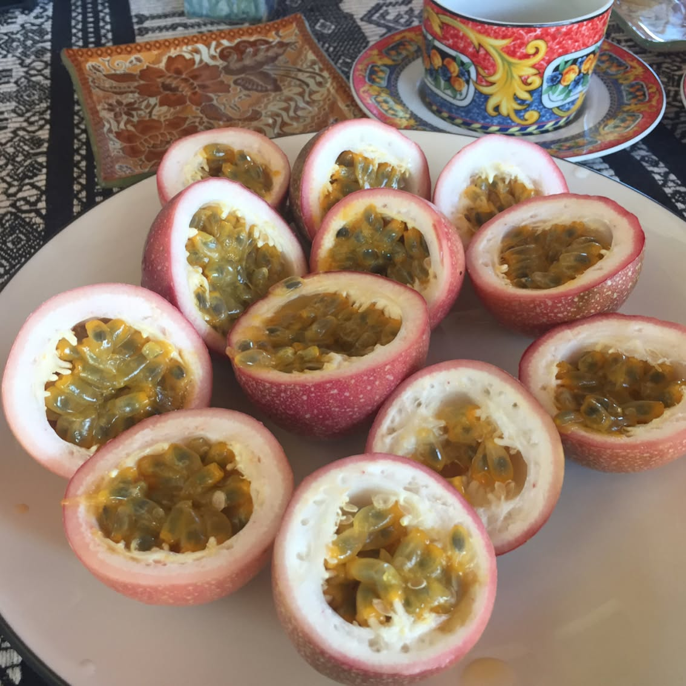

Never thought that passion fruit is a vine that grows anywhere it can climb ☝🏼if not controlled it can destroy other plants and property (house roof for example). It has beautiful flowers 🌸 and delicious juicy fruits🍈 that are very strong antioxidants - rich in vitamin C, A, ß-carotene and cryptoxanthin-ß (good for your eyesight). Also passion fruit is rich in potassium (third-most prevalent mineral in the body, used in many physiological mechanisms including muscular contractions, autonomic nervous system maintenance, blood pressure regulation, fluid balance, bone growth, and kidney stone prevention) and iron, copper, magnesium and phosphorus. 😉
2017-03-25 11:59:41
Back to main page